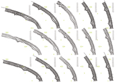
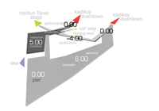
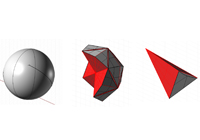
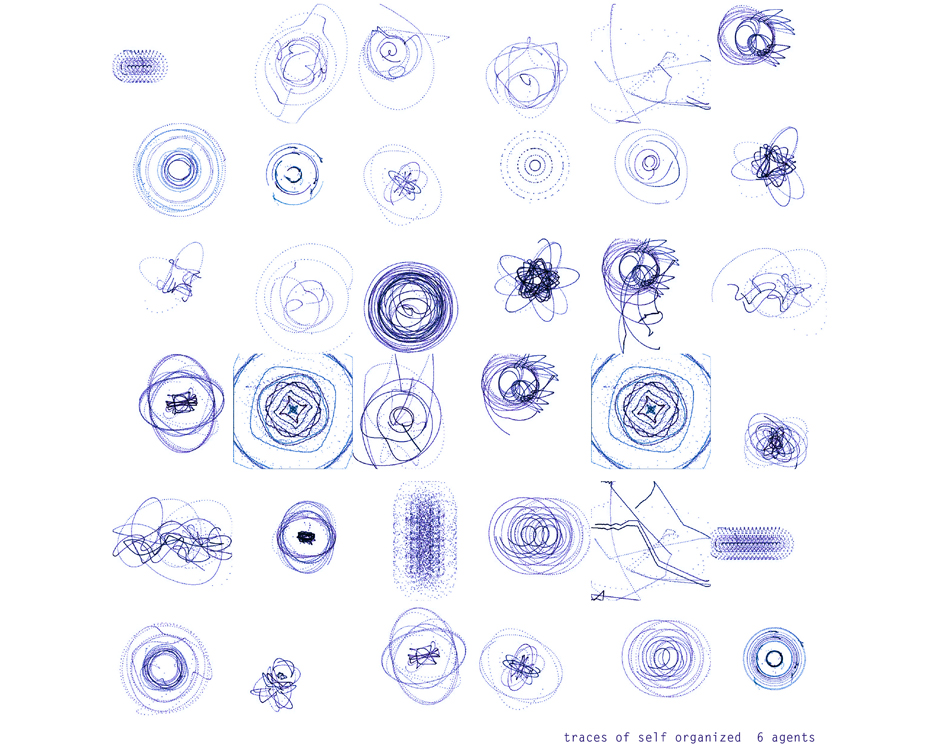

| SITE UNDER CONSTRUCTION |
| ABOUT| |
| JALE GÖZDE KÜÇÜKOĞLU jgkucukogl@gmail.com |
| my fabacademy page| |
MATERIAL-TECHNIQUE
variations,simulation, structure, analog modeling, technique research, crochet, pattern, form
ARCH-MATERIAL
structure, rule-based design, component, variations, fabrication
MATERIAL
3D scanning, digital modeling, 3D printing
ALGORITMIC MODELING
regulating lines, behaviour, form-force, form finding
METHOD
fractal geometry, pattern, algorithmic modeling, digital fabrication
MATERIAL-TECHIQUE
tension, structure, material research, component based design
ARCH
organizational network, associative design, modular design, variations

MATERIAL-TECHNIQUE
fibrous structures, associative modeling, variations, concrete, analog modeling, weaving technique
ARCH
urban distruptions, cultural center
VISUAL
logo
URBAN
algorithmic modelling, urban texture, loop subdivision
ARCH-MATERIAL
variations, plastic, recycled material, material research, 3D milling, component-based design, regulating grid
ARCH-URBAN
variations, regulating lines, rule-based design, associative modeling, machine, site organization
MATERIAL
material behaviour, flexibility, structure, analog modeling, laser cutting, form finding
VISUALIZATION-DIAGRAM
diagraming
ARCH-DIAGRAM
data visualisation, 3D printing, rule-based design, diagraming
VISUALIZATION-DIAGRAM
data visualisation
 -ARCH
-ARCH topography, public spaces
ARCH
variations, regulating lines, rule-based design, machine, site organization
METHOD
fractal geometry, pattern, algorithmic modeling, variations

ARCH
continous surface, urban prosthesis, public spaces
URBAN
urban analysis
ARCH-MATERIAL
structure, rule-based design, component, variations, fabrication

MATERIAL
concrete, molding-casting, 3D milling, component-based design
MATERIAL
algorithmic modeling, digital fabrication, flat material to 3D surface
ARCH
topography, public space, culture center
ARCH
topography, experimentation, form finding

METHOD
simulation
MATERIAL-TECHNIQUE
folding, material research, form, variation
METHOD
fractal geometry, pattern, algorithmic modeling, digital fabrication
ARCH
concrete, tension/compression, modular component, mold-cast, fabrication
ARCH-MATERIAL-FAB
d, plastic, recycled material, material research, 3D milling, component-based design, regulating grid
ARCH
topography, public space
URBAN- METHOD-FAB
fractal, pattern, algorithmic modeling, variations
MATERIAL-TECHNIQUE
variations,simulation, structure, analog modeling, technique research, pattern, form
MATERIAL-TECHNIQUE
fibrous structures, associative modeling, concrete, analog modeling, weaving technique, installation
ARCH
organizational network, associative design, modular design, variations
MATERIAL-TECHNIQUE
variations,simulation, structure, analog modeling, technique research, pattern, form